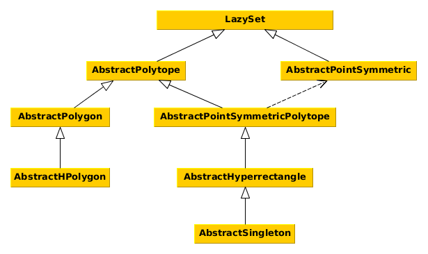

Set Interfaces
This section of the manual describes the interfaces for different set types. Every set that fits the description of an interface should also implement it. This helps in several ways:
avoid code duplicates,
provide functions for many sets at once,
allow changes in the source code without changing the API.
The interface functions are outlined in the interface documentation. See Common Set Representations for implementations of the interfaces.
The naming convention is such that all interface names (with the exception of the main abstract type LazySet) should be preceded by Abstract.
The following diagram shows the interface hierarchy.

LazySet
Every convex set in this library implements this interface.
LazySets.LazySet — Type.LazySet{N}Abstract type for convex sets, i.e., sets characterized by a (possibly infinite) intersection of halfspaces, or equivalently, sets $S$ such that for any two elements $x, y ∈ S$ and $0 ≤ λ ≤ 1$ it holds that $λ·x + (1-λ)·y ∈ S$.
Notes
LazySet types should be parameterized with a type N, typically N<:Real, for using different numeric types.
Every concrete LazySet must define the following functions:
σ(d::AbstractVector{N}, S::LazySet{N}) where {N<:Real}– the support vector ofSin a given directiond; note that the numeric typeNofdandSmust be identical; for some set typesNmay be more restrictive thanRealdim(S::LazySet)::Int– the ambient dimension ofS
julia> subtypes(LazySet)
18-element Array{Any,1}:
AbstractPointSymmetric
AbstractPolytope
CacheMinkowskiSum
CartesianProduct
CartesianProductArray
ConvexHull
ConvexHullArray
EmptySet
ExponentialMap
ExponentialProjectionMap
HalfSpace
Hyperplane
Intersection
IntersectionArray
Line
LinearMap
MinkowskiSum
MinkowskiSumArraySupport function and support vector
Every LazySet type must define a function σ to compute the support vector.
LazySets.support_vector — Function.support_vectorAlias for the support vector σ.
LazySets.ρ — Method.ρ(d::AbstractVector{N}, S::LazySet{N})::N where {N<:Real}Evaluate the support function of a set in a given direction.
Input
d– directionS– convex set
Output
The support function of the set S for the direction d.
Notes
The numeric type of the direction and the set must be identical.
LazySets.support_function — Function.support_functionAlias for the support function ρ.
Other globally defined set functions
Base.LinAlg.norm — Method.norm(S::LazySet, [p]::Real=Inf)Return the norm of a convex set. It is the norm of the enclosing ball (of the given $p$-norm) of minimal volume that is centered in the origin.
Input
S– convex setp– (optional, default:Inf) norm
Output
A real number representing the norm.
LazySets.radius — Method.radius(S::LazySet, [p]::Real=Inf)Return the radius of a convex set. It is the radius of the enclosing ball (of the given $p$-norm) of minimal volume with the same center.
Input
S– convex setp– (optional, default:Inf) norm
Output
A real number representing the radius.
LazySets.diameter — Method.diameter(S::LazySet, [p]::Real=Inf)Return the diameter of a convex set. It is the maximum distance between any two elements of the set, or, equivalently, the diameter of the enclosing ball (of the given $p$-norm) of minimal volume with the same center.
Input
S– convex setp– (optional, default:Inf) norm
Output
A real number representing the diameter.
LazySets.an_element — Method.an_element(S::LazySet{N}) where {N<:Real}Return some element of a convex set.
Input
S– convex set
Output
An element of a convex set.
Point symmetric set
Point symmetric sets such as balls of different norms are characterized by a center. Note that there is a special interface combination Point symmetric polytope.
LazySets.AbstractPointSymmetric — Type.AbstractPointSymmetric{N<:Real} <: LazySet{N}Abstract type for point symmetric sets.
Notes
Every concrete AbstractPointSymmetric must define the following functions:
center(::AbstractPointSymmetric{N})::Vector{N}– return the center point
julia> subtypes(AbstractPointSymmetric)
3-element Array{Any,1}:
Ball2
Ballp
EllipsoidThis interface defines the following functions:
LazySets.dim — Method.dim(S::AbstractPointSymmetric)::IntReturn the ambient dimension of a point symmetric set.
Input
S– set
Output
The ambient dimension of the set.
LazySets.an_element — Method.an_element(S::AbstractPointSymmetric{N})::Vector{N} where {N<:Real}Return some element of a point symmetric set.
Input
S– point symmetric set
Output
The center of the point symmetric set.
Polytope
A polytope has finitely many vertices (V-representation) resp. facets (H-representation). Note that there is a special interface combination Point symmetric polytope.
LazySets.AbstractPolytope — Type.AbstractPolytope{N<:Real} <: LazySet{N}Abstract type for polytopic sets, i.e., sets with finitely many flat facets, or equivalently, sets defined as an intersection of a finite number of halfspaces, or equivalently, sets with finitely many vertices.
Notes
Every concrete AbstractPolytope must define the following functions:
vertices_list(::AbstractPolytope{N})::Vector{Vector{N}}– return a list of all vertices
julia> subtypes(AbstractPolytope)
4-element Array{Any,1}:
AbstractPointSymmetricPolytope
AbstractPolygon
HPolytope
VPolytopeThis interface defines the following functions:
LazySets.singleton_list — Method.singleton_list(P::AbstractPolytope{N})::Vector{Singleton{N}} where {N<:Real}Return the vertices of a polytopic as a list of singletons.
Input
P– a polytopic set
Output
List containing a singleton for each vertex.
LazySets.linear_map — Method.linear_map(M::AbstractMatrix, P::AbstractPolytope{N}) where {N<:Real}Concrete linear map of an abstract polytype.
Input
M– matrixP– abstract polytype
Output
The polytope in V-representation obtained by applying the linear map $M$ to the set $P$. If the given polytope is two-dimensional, a polygon instead of a general polytope is returned.
Polygon
A polygon is a two-dimensional polytope.
LazySets.AbstractPolygon — Type.AbstractPolygon{N<:Real} <: AbstractPolytope{N}Abstract type for polygons (i.e., 2D polytopes).
Notes
Every concrete AbstractPolygon must define the following functions:
tovrep(::AbstractPolygon{N})::VPolygon{N}– transform into V-representationtohrep(::AbstractPolygon{N})::AbstractHPolygon{N}– transform into H-representation
julia> subtypes(AbstractPolygon)
2-element Array{Any,1}:
AbstractHPolygon
VPolygonThis interface defines the following functions:
LazySets.dim — Method.dim(P::AbstractPolygon)::IntReturn the ambient dimension of a polygon.
Input
P– polygon
Output
The ambient dimension of the polygon, which is 2.
HPolygon
An HPolygon is a polygon in H-representation (or constraint representation).
LazySets.AbstractHPolygon — Type.AbstractHPolygon{N<:Real} <: AbstractPolygon{N}Abstract type for polygons in H-representation (i.e., constraints).
Notes
Every concrete AbstractHPolygon must have the following fields:
constraints::Vector{LinearConstraint{N}}– the constraints
New subtypes should be added to the convert method in order to be convertible.
julia> subtypes(AbstractHPolygon)
2-element Array{Any,1}:
HPolygon
HPolygonOptThis interface defines the following functions:
LazySets.an_element — Method.an_element(P::AbstractHPolygon{N})::Vector{N} where {N<:Real}Return some element of a polygon in constraint representation.
Input
P– polygon in constraint representation
Output
A vertex of the polygon in constraint representation (the first one in the order of the constraints).
Base.:∈ — Method.∈(x::AbstractVector{N}, P::AbstractHPolygon{N})::Bool where {N<:Real}Check whether a given 2D point is contained in a polygon in constraint representation.
Input
x– two-dimensional point/vectorP– polygon in constraint representation
Output
true iff $x ∈ P$.
Algorithm
This implementation checks if the point lies on the outside of each edge.
LazySets.vertices_list — Method.vertices_list(P::AbstractHPolygon{N},
apply_convex_hull::Bool=false
)::Vector{Vector{N}} where {N<:Real}Return the list of vertices of a polygon in constraint representation.
Input
P– polygon in constraint representationapply_convex_hull– (optional, default:false) to post process or not the intersection of constraints with a convex hull
Output
List of vertices.
LazySets.tohrep — Method.tohrep(P::AbstractHPolygon{N})::AbstractHPolygon{N} where {N<:Real}Build a contraint representation of the given polygon.
Input
P– polygon in constraint representation
Output
The identity, i.e., the same polygon instance.
tohrep(P::VPolygon{N}, ::Type{HPOLYGON}=HPolygon
)::AbstractHPolygon{N} where {N<:Real, HPOLYGON<:AbstractHPolygon}Build a constraint representation of the given polygon.
Input
P– polygon in vertex representationHPOLYGON– (optional, default:HPolygon) type of target polygon
Output
The same polygon but in constraint representation, an AbstractHPolygon.
Algorithm
The algorithms consists of adding an edge for each consecutive pair of vertices. Since the vertices are already ordered in counter-clockwise fashion (CWW), the constraints will be sorted automatically (CCW) if we start with the first edge between the first and second vertex.
LazySets.tovrep — Method.tovrep(P::AbstractHPolygon{N})::VPolygon{N} where {N<:Real}Build a vertex representation of the given polygon.
Input
P– polygon in constraint representation
Output
The same polygon but in vertex representation, a VPolygon.
LazySets.addconstraint! — Method.addconstraint!(P::AbstractHPolygon{N},
constraint::LinearConstraint{N};
[linear_search]::Bool=(
length(P.constraints) < BINARY_SEARCH_THRESHOLD)
)::Nothing where {N<:Real}Add a linear constraint to a polygon in constraint representation, keeping the constraints sorted by their normal directions.
Input
P– polygon in constraint representationconstraint– linear constraint to add
Output
Nothing.
LazySets.constraints_list — Method.constraints_list(P::AbstractHPolygon{N})::Vector{LinearConstraint{N}} where {N<:Real}Return the list of constraints defining a polygon in H-representation.
Input
P– polygon in H-representation
Output
The list of constraints of the polygon.
Point symmetric polytope
A point symmetric polytope is a combination of two other interfaces: Point symmetric set and Polytope.
AbstractPointSymmetricPolytope{N<:Real} <: AbstractPolytope{N}Abstract type for point symmetric, polytopic sets. It combines the AbstractPointSymmetric and AbstractPolytope interfaces. Such a type combination is necessary as long as Julia does not support multiple inheritance.
Notes
Every concrete AbstractPointSymmetricPolytope must define the following functions:
from
AbstractPointSymmetric:center(::AbstractPointSymmetricPolytope{N})::Vector{N}– return the center point
from
AbstractPolytope:vertices_list(::AbstractPointSymmetricPolytope{N})::Vector{Vector{N}}– return a list of all vertices
julia> subtypes(AbstractPointSymmetricPolytope)
5-element Array{Any,1}:
AbstractHyperrectangle
Ball1
Interval
LineSegment
ZonotopeThis interface defines the following functions:
LazySets.dim — Method.dim(P::AbstractPointSymmetricPolytope)::IntReturn the ambient dimension of a point symmetric set.
Input
P– set
Output
The ambient dimension of the set.
LazySets.an_element — Method.an_element(P::AbstractPointSymmetricPolytope{N})::Vector{N} where {N<:Real}Return some element of a point symmetric polytope.
Input
P– point symmetric polytope
Output
The center of the point symmetric polytope.
Hyperrectangle
A hyperrectangle is a special point symmetric polytope with axis-aligned facets.
LazySets.AbstractHyperrectangle — Type.AbstractHyperrectangle{N<:Real} <: AbstractPointSymmetricPolytope{N}Abstract type for hyperrectangular sets.
Notes
Every concrete AbstractHyperrectangle must define the following functions:
radius_hyperrectangle(::AbstractHyperrectangle{N})::Vector{N}– return the hyperrectangle's radius, which is a full-dimensional vectorradius_hyperrectangle(::AbstractHyperrectangle{N}, i::Int)::N– return the hyperrectangle's radius in thei-th dimension
julia> subtypes(AbstractHyperrectangle)
4-element Array{Any,1}:
AbstractSingleton
BallInf
Hyperrectangle
SymmetricIntervalHullThis interface defines the following functions:
Base.LinAlg.norm — Method.norm(S::LazySet, [p]::Real=Inf)Return the norm of a convex set. It is the norm of the enclosing ball (of the given $p$-norm) of minimal volume that is centered in the origin.
Input
S– convex setp– (optional, default:Inf) norm
Output
A real number representing the norm.
norm(H::AbstractHyperrectangle, [p]::Real=Inf)::RealReturn the norm of a hyperrectangular set.
Input
H– hyperrectangular setp– (optional, default:Inf) norm
Output
A real number representing the norm.
Notes
The norm of a hyperrectangular set is defined as the norm of the enclosing ball, of the given $p$-norm, of minimal volume that is centered in the origin.
LazySets.radius — Method.radius(S::LazySet, [p]::Real=Inf)Return the radius of a convex set. It is the radius of the enclosing ball (of the given $p$-norm) of minimal volume with the same center.
Input
S– convex setp– (optional, default:Inf) norm
Output
A real number representing the radius.
radius(H::AbstractHyperrectangle, [p]::Real=Inf)::RealReturn the radius of a hyperrectangular set.
Input
H– hyperrectangular setp– (optional, default:Inf) norm
Output
A real number representing the radius.
Notes
The radius is defined as the radius of the enclosing ball of the given $p$-norm of minimal volume with the same center. It is the same for all corners of a hyperrectangular set.
LazySets.σ — Method.σ(d::AbstractVector{N}, H::AbstractHyperrectangle{N}) where {N<:Real}Return the support vector of a hyperrectangular set in a given direction.
Input
d– directionH– hyperrectangular set
Output
The support vector in the given direction. If the direction has norm zero, the vertex with biggest values is returned.
Base.:∈ — Method.∈(x::AbstractVector{N}, H::AbstractHyperrectangle{N})::Bool where {N<:Real}Check whether a given point is contained in a hyperrectangular set.
Input
x– point/vectorH– hyperrectangular set
Output
true iff $x ∈ H$.
Algorithm
Let $H$ be an $n$-dimensional hyperrectangular set, $c_i$ and $r_i$ be the box's center and radius and $x_i$ be the vector $x$ in dimension $i$, respectively. Then $x ∈ H$ iff $|c_i - x_i| ≤ r_i$ for all $i=1,…,n$.
LazySets.vertices_list — Method.vertices_list(H::AbstractHyperrectangle{N})::Vector{Vector{N}} where {N<:Real}Return the list of vertices of a hyperrectangular set.
Input
H– hyperrectangular set
Output
A list of vertices.
Notes
For high dimensions, it is preferable to develop a vertex_iterator approach.
Singleton
A singleton is a special hyperrectangle consisting of only one point.
LazySets.AbstractSingleton — Type.AbstractSingleton{N<:Real} <: AbstractHyperrectangle{N}Abstract type for sets with a single value.
Notes
Every concrete AbstractSingleton must define the following functions:
element(::AbstractSingleton{N})::Vector{N}– return the single elementelement(::AbstractSingleton{N}, i::Int)::N– return the single element's entry in thei-th dimension
julia> subtypes(AbstractSingleton)
2-element Array{Any,1}:
Singleton
ZeroSetThis interface defines the following functions:
LazySets.σ — Method.σ(d::AbstractVector{N}, S::AbstractSingleton{N}) where {N<:Real}Return the support vector of a set with a single value.
Input
d– directionS– set with a single value
Output
The support vector, which is the set's vector itself, irrespective of the given direction.
Base.:∈ — Method.∈(x::AbstractVector{N}, S::AbstractSingleton{N})::Bool where {N<:Real}Check whether a given point is contained in a set with a single value.
Input
x– point/vectorS– set with a single value
Output
true iff $x ∈ S$.
Notes
This implementation performs an exact comparison, which may be insufficient with floating point computations.
LazySets.an_element — Method.an_element(S::LazySet{N}) where {N<:Real}Return some element of a convex set.
Input
S– convex set
Output
An element of a convex set.
an_element(P::AbstractPointSymmetricPolytope{N})::Vector{N} where {N<:Real}Return some element of a point symmetric polytope.
Input
P– point symmetric polytope
Output
The center of the point symmetric polytope.
LazySets.center — Method.center(S::AbstractSingleton{N})::Vector{N} where {N<:Real}Return the center of a set with a single value.
Input
S– set with a single value
Output
The only element of the set.
LazySets.vertices_list — Method.vertices_list(S::AbstractSingleton{N})::Vector{Vector{N}} where {N<:Real}Return the list of vertices of a set with a single value.
Input
S– set with a single value
Output
A list containing only a single vertex.
LazySets.radius_hyperrectangle — Method.radius_hyperrectangle(S::AbstractSingleton{N})::Vector{N} where {N<:Real}Return the box radius of a set with a single value in every dimension.
Input
S– set with a single value
Output
The zero vector.
LazySets.radius_hyperrectangle — Method.radius_hyperrectangle(S::AbstractSingleton{N}, i::Int)::N where {N<:Real}Return the box radius of a set with a single value in a given dimension.
Input
S– set with a single value
Output
Zero.
LazySets.linear_map — Method.linear_map(M::AbstractMatrix, S::AbstractSingleton{N}) where {N<:Real}Concrete linear map of an abstract singleton.
Input
M– matrixS– abstract singleton
Output
The abstract singleton of the same type of $S$ obtained by applying the linear map to the element in $S$.